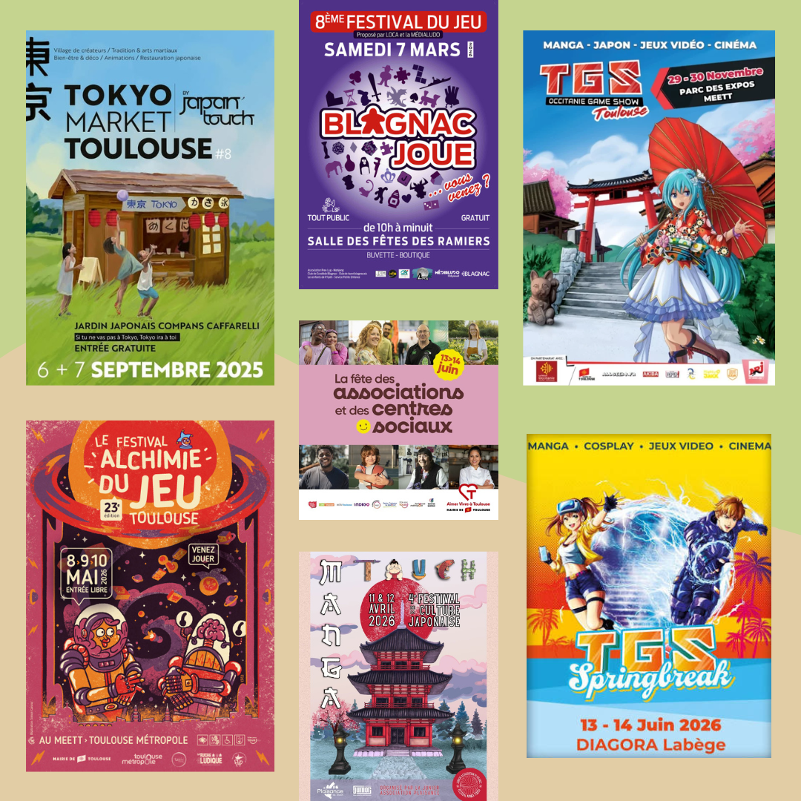
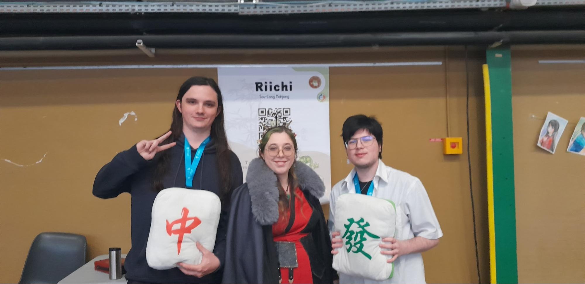
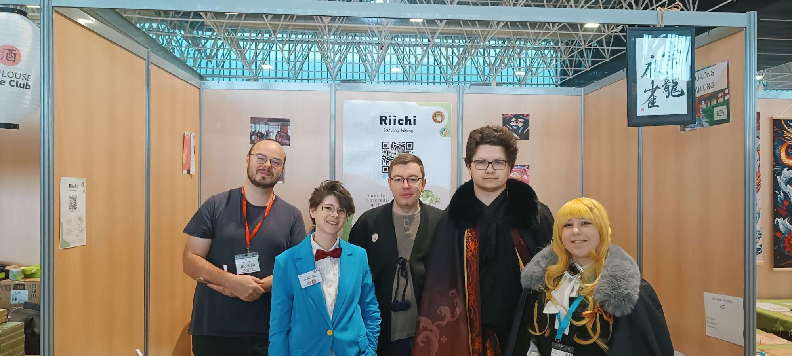
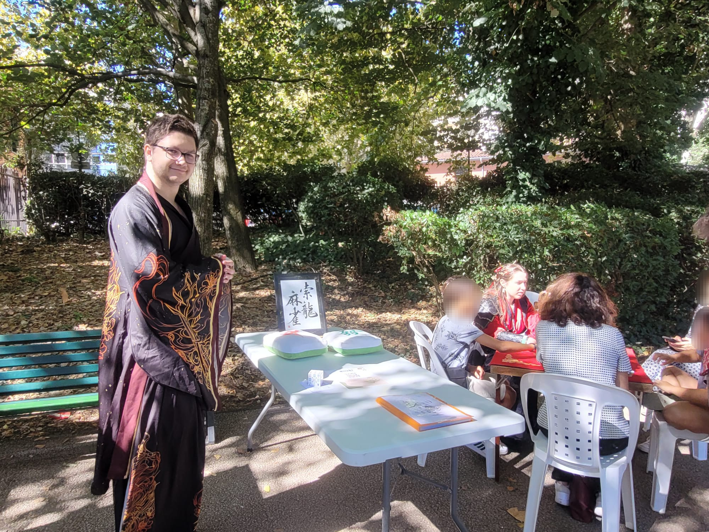
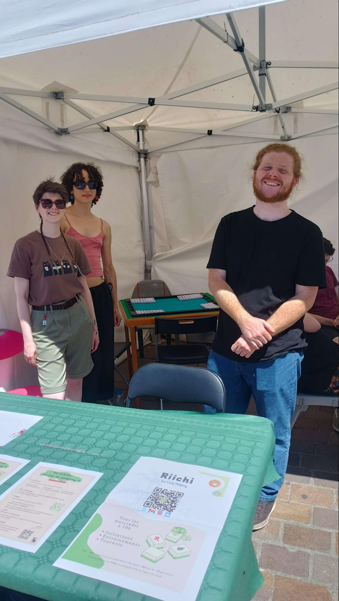
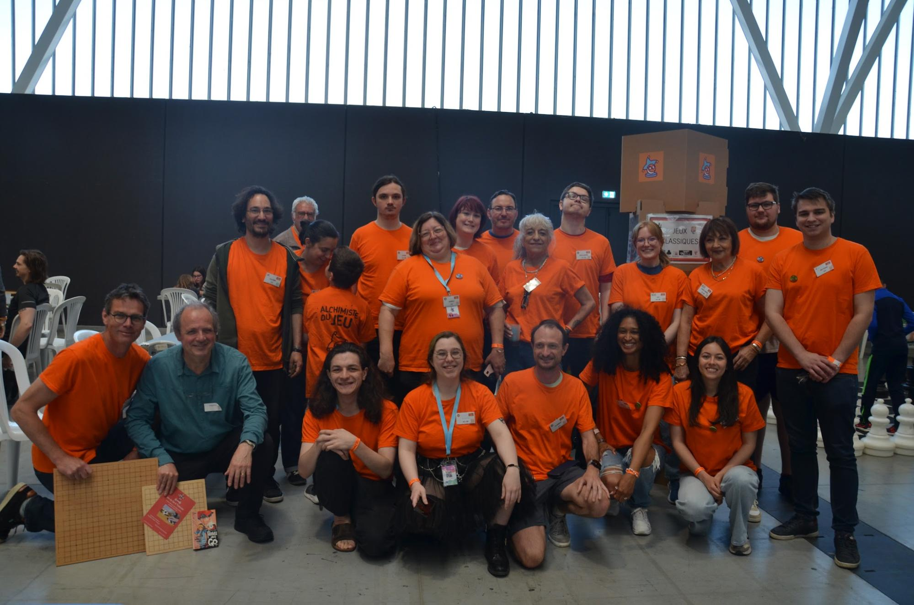
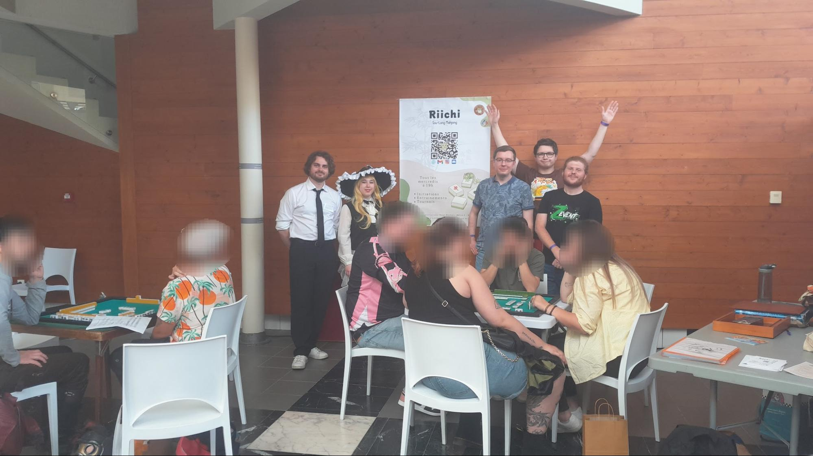

Les festivals de la saison 2025-2026
Récapitulatif des festivals de la saison

Petit récapitulatif des festivals auxquels notre club a participé cette saison 2025-2026 :
- Septembre 2025 : festival de rentrée au Tokyo Market (by Japan Touch), qui devient en 2026 le Miwa Festival. Un public très présent sur les deux tables d’initiation, et un accueil vraiment chouette.
- Novembre 2025 : première participation au TGS. Nous avions une table d’initiation très sollicitée, et on aimerait bien demander plus de place la prochaine fois.
- Mars 2026 : deux tables d’initiation à Blagnac Joue pour épauler le Blue Frog Mahjong. Moins de passage sur les tables, mais une superbe ambiance et un accueil excellent.
- Avril 2026 : deux tables à Manga Touch Plaisance. Nous avons été très bien accueillis et avons fait pas mal d’initiations, même si l’éloignement rend la recrue un peu plus difficile.
- Mai 2026 : l’Alchimie du Jeu. Notre plus gros festival de l’année, avec 3 tables côté Sou-Long et 6 tables côté Blue Frog. Un moment très fort, au cœur d’un espace jeu classique co-géré avec enthousiasme.
- Juin 2026 : nous avons pu assurer deux festivals en simultané ! Le TGS Springbreak, qui a très bien fonctionné malgré un emplacement moins favorable, et la Fête des associations et des centres sociaux de Toulouse, un peu plus compliquée sous la chaleur.
Merci à tous les organisateurs qui nous ont invités, accueillis et chouchoutés, et merci au public d’avoir donné sa chance au mahjong cette année. On repart pour une nouvelle saison avec encore plus d’envie de faire découvrir le jeu à de nouvelles personnes !
Pendant l’été, le Blue Frog Mahjong assure aussi les initiations au mahjong à la LudoPlage, les dimanches de 14h à 20h, du 27 juillet au 24 août.





